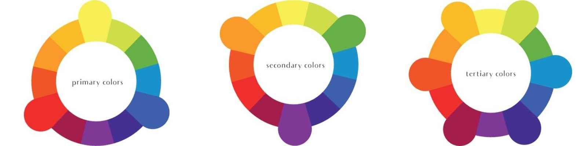
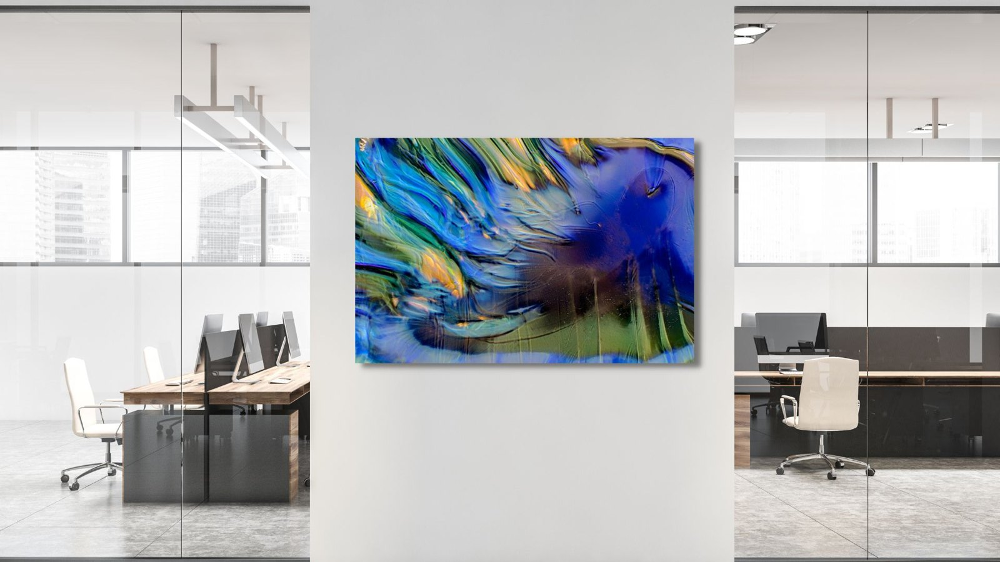

The Library · Omaste Witkowski
How Colors Affect Mood In Interior Designs

Having the right colors in your interior designs are key to productivity, mood, and even innovation!
Some colors, like red, will trigger emotions like passion, love, anger and danger. Where blue brings feelings of calmness, serenity and peace. This is why it is important to put thought into the use of the space and the colors that will enhance the experience in that space.
Understanding The Color Wheel's Importance in Interior Design
Having the right colors in your interior designs are key to productivity, mood, and even innovation!
Some colors, like red, will trigger emotions like passion, love, anger and danger. Where blue brings feelings of calmness, serenity and peace. This is why it is important to put thought into the use of the space and the colors that will enhance the experience in that space.
Now, if you are familiar with color theory, color wheels and mixing colors, you will know that there are primary colors, secondary colors, and tertiary colors.

Primary Colors
These are red, yellow and blue. these are the only three colors in the colorverse that cannot be made from mixing colors. they’re primary in the sense that they’re the beginning colors, or starters, of virtually every other color. conversely, all colors can be derived from a mix of the primaries.
Secondary Colors
These are the three colors created from adding two primary colors together; orange (red + yellow), green (blue + yellow), and purple (blue + red). these will also be directly across the wheel from the three primaries.
Tertiary Colors
They are the six tertiary colors on the color wheel are made from mixing a primary color and a secondary color; yellow-orange, yellow-green, blue-green, blue-purple, red-purple, and red-orange.
Using The Color Wheel In Art For Interior Designs
Now is the fun part! Mixing and matching these colors in interior spaces in order to create spaces that people love to be in. On the most basic level, a good interior design improves a space by making it better suited to its purpose.
Each environment, and room within that environment will have different purposes to it’s use and then how it works into an overall interior design style. This can get a little complicated so we are going to break it down into simple colors and how they affect mood in a room.
Using Primary Colors In Interior Designs

Blue!
Interior designers love blues for many reasons for both corporate and residential projects. Blues are the ideal color for reception areas as they are formal, conservative and balancing. The most common use for blue is in monochromatic color scheme, where blues of different shades, tints or tones are combined. This creates a wonderfully tranquil space, sedative and heavenly, ideal for bathrooms or adults bedrooms.
Add pale blue into your space to soften a corner, choose a dramatic blue for a strong regal flare, toss in a bright blue for an electric pop of color, or stick with a neutral shade for an inviting color to paint the walls. Blue is also preferable because it works as a compliment to almost any color on the wheel.
Yellow!
The yellow color is bright, cheery, warm, and sunny. It makes us feel cozy and happy. In color therapy, yellow brings a joyful feeling. For interior design, yellow furniture, walls, or accents can add brightness, even to a small space.
Interior decorating with yellow color is associated with warm and happy things in life. Color therapy uses yellow color shades to make people smile and feel joyful. The yellow interior design color creates a sense of warmth and coziness, and it is a trendy wall paint color.
Red!
Red is a powerful design element and interior designers often use red to draw attention to important elements. For example you can highlight sections of a room to get attention to a specific area, idea or design element. This color can also spur people into action and stimulate ides.
The use of the color red in interiors has been known to raise blood pressure, increase respiration, and boost metabolism. A red accent draws attention. Many designers use light red color shades in modern interior designs to stimulate passion, sensitivity and innovation, and make decor feel dynamic and impressive.
Using Secondary Colors In Interior Designs

Orange!
Orange can be used in any space that is used for fun, happy, social interaction such as the kitchen, or entertainment areas is ideal. This is due to the psychological properties of orange. The softer, paler oranges (salmon, peach and apricot tones) can be used more often in the bedroom.
Interior designers often use orange to add warmth to rooms with splashes of color, in art or with accent walls.
Green!
The color green mostly has a calming effect with a sense of security, which makes it an ideal color for interior design. Emotions associated with the color Green are: Nature, Harmony, Growth, Fertility.
Purple!
Purple is often considered the color of royalty and creativity, and it is a combination of calm blue and exciting red. This color can add exotic flair to different rooms in your home and be dramatic or quiet, depending on the tone or shade. Purple is regal color can add richness to a space or drama to an architecturally simple room. It also happens to be the Pantone Color of the Year for 2022!
Using Tertiary Colors In Interior Designs

Tertiary colors are the perfect way to tie together a color scheme in a room. For example, create an ocean palette of pale blue walls and green drapes. Use the tertiary color blue-green in accents such as lamps, throw pillows and in the walls art. Tertiary colors can be bold and exciting, and when paired with a complementary color, create a striking impression.
You need a little bit of confidence when using tertiary colors to decorate your home, but as long as you remember the ‘less is more’ rule, these exciting colors can be used to inject life into an otherwise drab interior, or at least one that is too dependent on neutrals.
Find your own piece with the art adventure · Ask the gallery what fits your wall